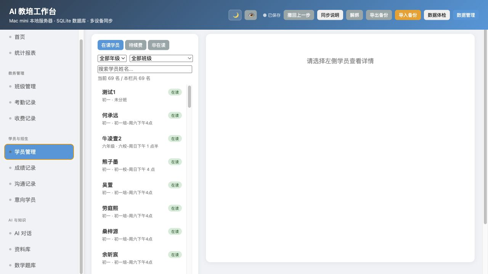
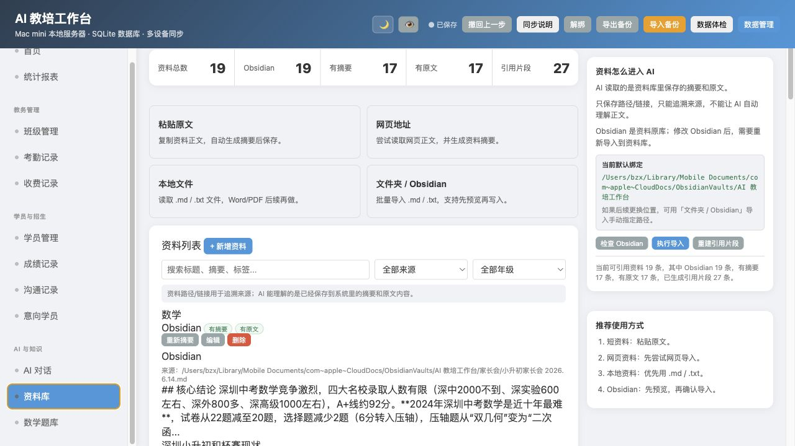

AI 教培工作台原系统优化批注
这版不是重新设计一套系统，而是在当前已经可用的 AI 教培工作台基础上，一张截图一张截图地标注：哪些地方保留，哪些地方微调，哪些地方后续增强。目标是让系统更像一个数学老师每天会打开的工作台，而不是推翻重做。
总体原则
当前系统已经可用，不建议换成全新信息架构。只做“重点更突出、路径更短”。
首页不只是统计数字，要直接告诉老师今天/本周要处理什么。
数学老师判断学生状态，需要同时看成绩、课时、考勤、收费、沟通。
AI 对话先查准系统事实，资料库只负责可引用资料，不再堆花哨入口。
截图 1：首页
当前首页已经有统计、今日工作台、待办日历。建议保留结构，把“待处理动作”再前置。
 1
2
3
4
1
2
3
4
统计数字有价值，但目前更像展示。建议每个数字点击后进入对应筛选结果。
“待续费/欠费 1/15”很好，但老师还要知道点进去先处理谁。
现在按钮竖排紧凑，但含义混在一起。新增、记录、查看可以分层。
空状态没问题，但首页下半屏应该仍然给老师工作提示。
截图 2：学员管理
学员管理是老师最常打开的页面。建议重点优化“一个学生的完整状态”。

1 2 3 4名单是入口，应该直接看出谁欠费、谁课时不足、谁待续费。
一个学员页应该是“学生画像”，不是只显示基础资料。
数学老师看学生主要看趋势：最近一次成绩、最近一次沟通、最近一次收费。
AI 应基于该学生数据回答，例如“为什么要关注这个学生”。
截图 3：班级管理
班级管理应该围绕一个学期周期：组班、上课、接近结课、待续费、归档。
 1
2
3
4
1
2
3
4
对老师来说，班级最重要的是上到第几次、还有几次、什么时候续费。
班级人数正常，不代表班级健康。还要看欠费、缺勤、课时不足。
已有拉入拉出逻辑可用，不建议重做成复杂批量系统。
学生续费后状态变化，不应该影响归档班级里当期历史名单。
截图 4：AI 对话
AI 对话已经回到正确方向：像 ChatGPT 一样问系统。但还要继续强化“准、短、有依据”。
 1
2
3
4
1
2
3
4
现在的方向是对的：左侧历史，右侧聊天，不再堆任务卡片。
问题分两类：查数据、要建议。二者读取范围应该不同。
有依据时显示，没依据时不要占太多空间。
例如“小升初家长会怎么开”不应该列学生名单。
截图 5：资料库
资料库不应该再像后台大仓库，而是服务 AI 对话：哪些资料能被引用、有没有摘要、有没有原文。

1 2 3 4资料总数不够，关键是有摘要、有原文、有引用片段。
粘贴原文、网页、本地文件、Obsidian/文件夹已经够用。
现在说明有用，但更应该告诉你“当前默认 Obsidian 路径、最近导入、引用片段是否正常”。
只有路径没有原文/摘要的资料，AI 实际读不到正文。
截图 6：统计报表
报表现在能看数据，但老师更需要“解释”和“下一步动作”。
 1
2
3
4
1
2
3
4
经营数据对于个人教培很重要，尤其课消、欠费、来源、学校分布。
课消不是只看已消课时，还要看“为什么低/为什么异常”。
空图或弱信息图会降低使用意愿。
老师月底需要的是可读复盘，而不是自己拼数据。
执行顺序建议
| 顺序 | 要做什么 | 为什么先做 | 验收标准 |
|---|---|---|---|
| 第一批 | 首页行动队列、学员详情聚合、AI 问答继续回归测试 | 这是老师每天最常用的入口，改完马上能感受到效率提升。 | 打开首页 1 分钟内知道今天要处理谁；问 AI 不再答非所问。 |
| 第一批 | 班级周期视图：课次进度、风险徽标、结课/归档快照 | 数学班课管理天然按学期和课次推进，这个要比普通 CRM 更重要。 | 每个班一眼看到上到第几次、还剩几次、谁有风险。 |
| 第二批 | 资料库可引用状态、AI 右侧依据、经营复盘 | AI 要真正可用，必须知道用了哪些资料和哪些系统数据。 | AI 回答能显示依据；资料库能看出哪些资料可引用。 |
| 后续 | 题库、招生 CRM、家长端、学生错题端 | 这些是长期模块，应该拆为子工作台，不挤压主系统。 | 主系统保持总控，子模块各自演进。 |